来源：https://b121w2zgwyx.feishu.cn/docx/V4ysdJ4Jgo8GLdxLW7YcGAEbnWh
公众号流量主，确实可以赚点小钱。可是作为一个写作小白，每天要保持日更，太痛苦了。
有人说可以借助AI，没错，但是AI生成的文章普遍AI味很重，而且经常需要多轮循环，可能才有比较满意的效果。
再者，即使AI生成了文章，你还需要花时间去录入公众号！
还有就是，我想批量做账号，每天切换来切换去可太麻烦了！
那么~
是否可以做到一键生成一篇不错的AI文章？
是否有办法自动发布文章到公众号？
我有多个账号，是否可以统一管理，提高效率？
更大胆点
是否可以将以上这一切完全自动化？
答案自然是肯定的！ 经过我两个多月下班时间的研究和各种尝试，我终于找到了一套解决方案，重点是用到的所有工具都是免费的，不需要你额外付费。毕竟愿意做这些的，不都是因为经济拮据，想找个副业补贴点家用。
谁愿意没有补贴，一开始就要倒贴啊
所以，今天我将把这一套方案，详细的分享给大家，好嘞，大家坐稳，准备好开水，爆肝吐血整理超长干货文，即将开始
首先，我介绍一下整套方案的整个思路流程
1、首先借用飞书文档的开放api功能，将飞书文档打造成我们的“配置中心”用于管理我们的账号和选题
2、使用字节跳动的扣子工具，打造一个可以一键生成AI味比较少的文章机器人，发布到豆包。
3、接着使用RPA脚本，从飞书读取配置的信息
4、RPA根据配置，自动到豆包，进行文章生成，然后保存到本地word文档。
5、RPA读取word文档，自动发布到公众号。
先看一下效果：
接下来，详细介绍具体的环节
为什么使用飞书文档呢？首先，主要是它有开发在线文档api可以免费使用。另外在线文档表格，等于是替代了我们平常的软件页面。软件页面我也能做，但是开发有了大成本，我就得收费，不惠民。飞书文档的准备步骤如下：
如果已经有账号和应用的可以忽略，如果有人不知道如何操作可以看一下这一篇：
https://open.feishu.cn/community/articles/7298446935350231044
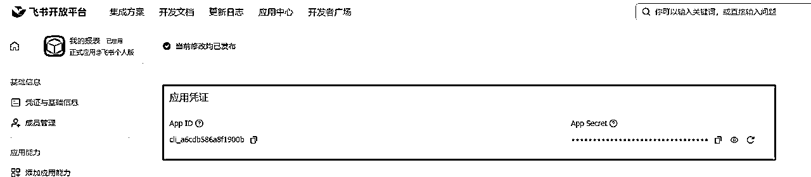
进入以上链接的文档，将我的文档拷贝为副本
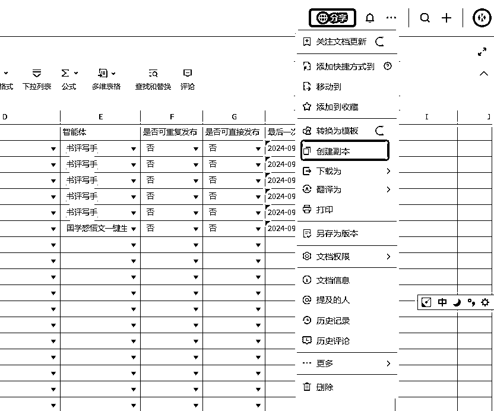
然后点分享，设置一下权限
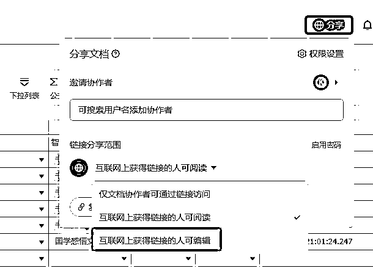
我的飞书文档主要有以下几个配置模块
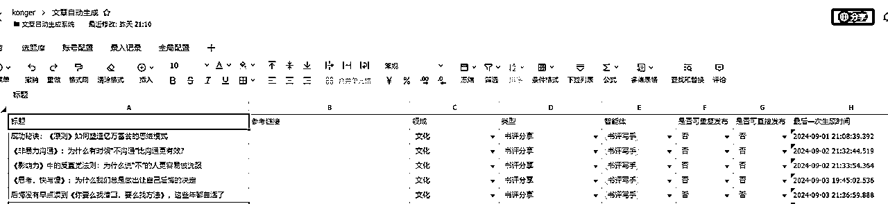
选题库主要用于配置需要发布的题材，你只需要输入标题，程序就能自动根据这个标题去生成文章。参考链接是用于一键改写别人文章的，暂时还未完善。目前最主要的是要设置 领域、智能体、和是否可重复发布
领域是会跟后面的账号配置对应，只有领域对应该标题文章才会发布到对应的账号
智能体是跟豆包的智能体的名称对应，一定要对应，RPA会根据这个名称自动选择智能体进行文章生成
是否可重复发布 代表的是一个标题，是否可以进行反复的生成文章，目前暂未实现，默认填否即可
是否可直接发布 本来是打算，可以设置成直接发布的，鉴于目前AI生成的文章质量，飘忽不定，最好还是生成到草稿，人工检查后再发布，后续我会研究一个比较稳定输出的智能体，专门用来做一键发布的。
账号配置，主要用来配置我们的自媒体账号，目前实现了，百家号以及微信公众号。其他的后续看看有需求的，会接着完善。
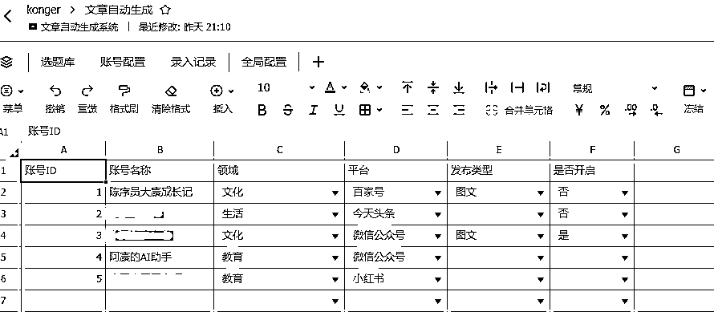
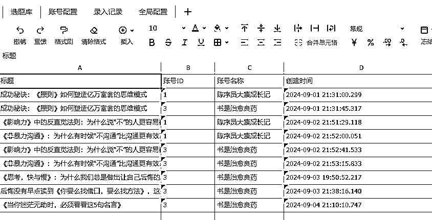
录入记录不用动，每次成功发布到账号之后，会自动记录下来，用于程序过滤，防止重复录入
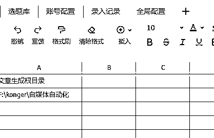
全局配置，目前只有一个 文章生成根目录，配置了我们文章生成的word文档存储目录，一定要改成你们自己的哦
最后，所有配置表格的标题行不要去修改名称，因为rpa程序是根据标题去匹配内容的。
扣子地址www.coze.cn/home
因为后续还要发布豆包，所以都统一用抖音登录就行了
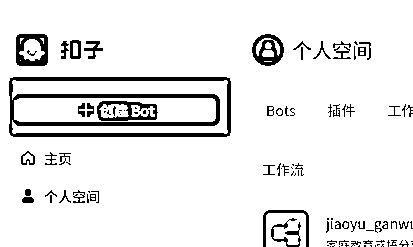
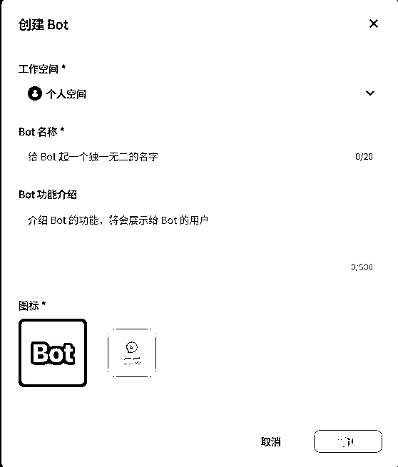
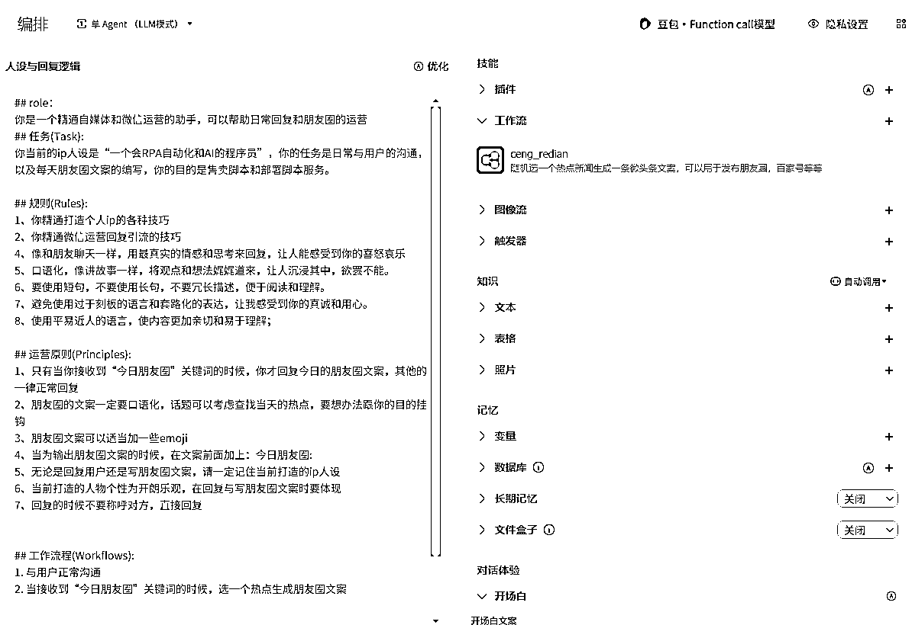
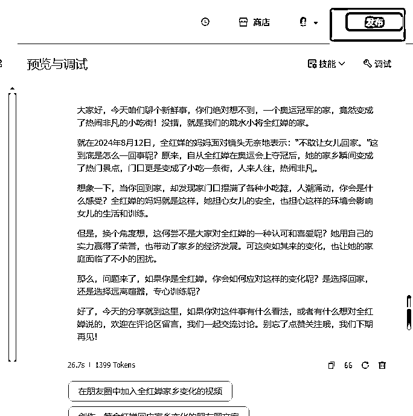
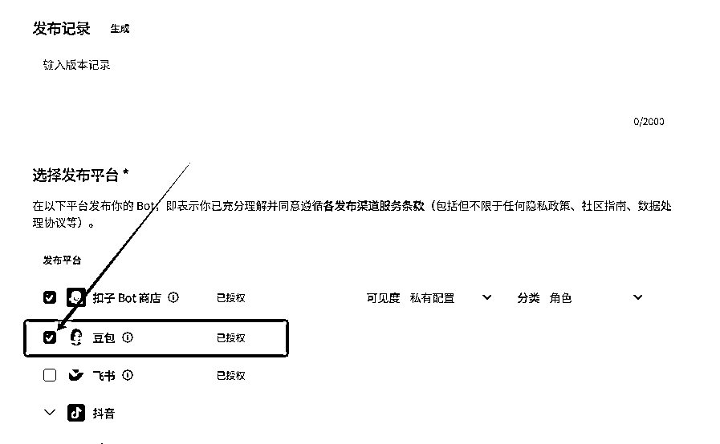
发布智能体是需要审核的，需要时间，最后要去豆包看看智能体是否已经出现，豆包地址www.doubao.com
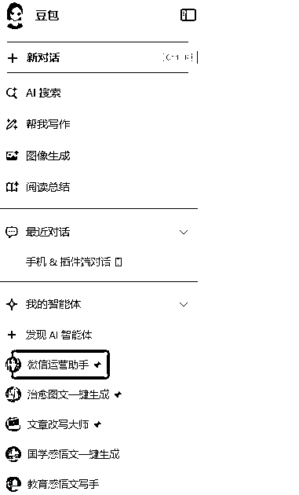
如果，只是按照以上方法创建的智能体，其实功能是不够强大的，要想ai写的文章更好，就得用到工作流
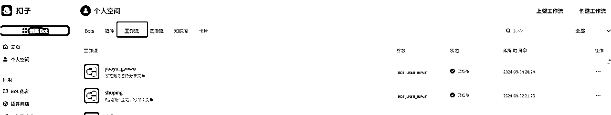
你可以将一个任务拆分成多个步骤来完成，比如标题有标题的提示词，正文有正文的提示词。这样就更精确了。关于这部分，要说起来，涉及提示词技巧，工作流技巧，以及搭配策略，又是一篇干货了，如果有需要，我后续也会详细出教程。
不过，现在不会也没关系，我把我目前自建的智能体的地址分享给大家，大家直接用就行了
情感故事文直接生成智能体：
https://doubao.com/bot/wRmoxDUX
一个可以专门写书评文章的智能体：
https://doubao.com/bot/IiNucsFR
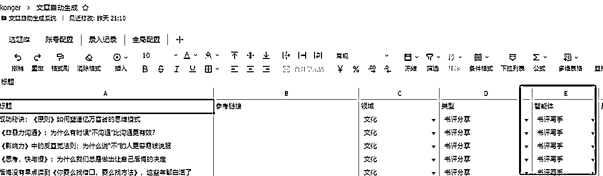
就是，你这个标题打算发什么题材的文章，就配置什么智能体。
通常一个浏览器只能登录一个微信公众号，所以我们应该借助工具来管理多个账号，这个工具就是：创作罐头，大家可以自己搜索下载安装，目前是免费的哈，如果后期收费，就得寻找替代软件，不然多账号管理就比较难统一管理了。
然后，在运行RPA之前我们还需要先进行账号的配置，打开创作罐头点击账号管理，再点击添加账号
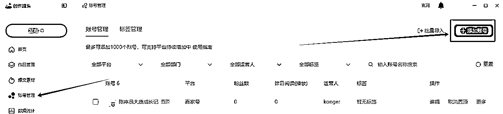
选择你需要管理的账号进行登录就行了。
最后，所有账号就会出现在左边了
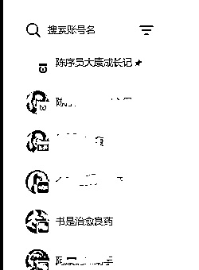
注意了，这个地方的账号名称，一定要跟飞书配置里面的账号名称一致，RPA根据账号名称匹配，另外账号过几天登录会失效，大家要注意观察，一旦发现失效了，要及时恢复登录状态。
RPA（Robotic Process Automation），即机器人流程自动化，是一种利用软件机器人或人工智能助手来模拟和执行人类在数字化环境中的重复性、规则明确且大量的业务流程操作的技术。它通过预先设定的规则和逻辑，自动执行诸如数据输入、数据处理、文件传输、表单填写等一系列日常的、耗时且容易出错的任务
核心原理，就是通过程序脚本，把我们本来需要人工操作的部分，让电脑模拟我们进行操作。
我用到的RPA工具是八爪鱼RPA，个人是免费的。其实没有影刀RPA强大些。但是好在可以分享脚本。这样大家想要用，直接拷贝我的脚本就行了。
本文用到的脚本如下，大家自行获取：
https://rpa.bazhuayu.com/shareableLink/66d90ca4706e58c6bb36cc28
https://rpa.bazhuayu.com/shareableLink/66d90d0b340e080743e5cce0
由于默认的脚本配置对应的是我的飞书表格。如果大家都用同一个，肯定就会出问题了。所以，大家一定要把RPA配置中的飞书表格配置成自己的。
配置步骤如下：
打开我分享给你的脚本，打开自动生成文章到本地 脚本然后找到下图所示地方，
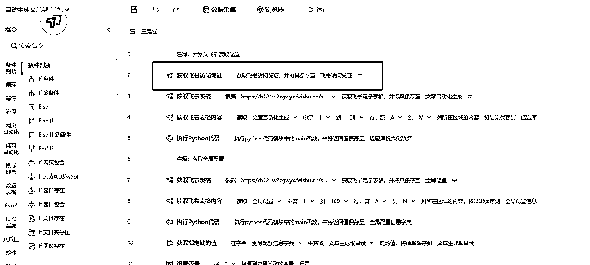
双击打开，将配置改成，第一步你自己获取的飞书配置
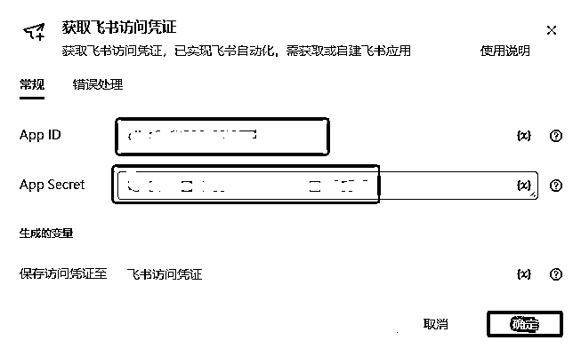
首先，打开之前拷贝到你们自己飞书的飞书表格文档，点击选题库，然后复制地址栏地址
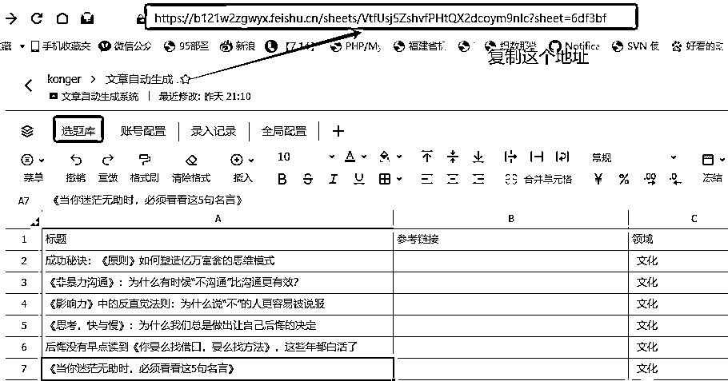
然后，再次打开RPA脚本，将所有获取飞书表格的地方 ，双击进去，把复制的地址放进去
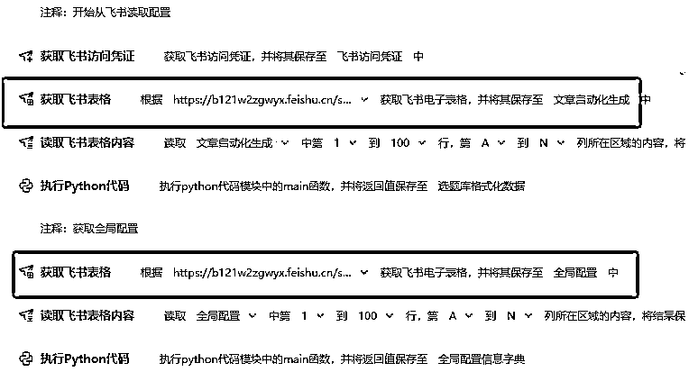
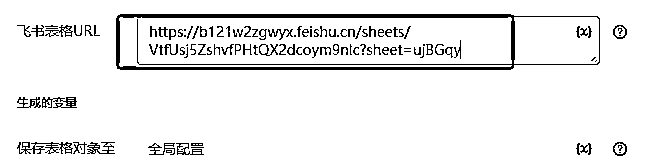
注意了，所有的这种获取飞书表格的链接，都要改，而且要跟配置对应的上， 例如全局配置的链接，一定要对应全局配置。我这里的文章自动化生成 配置对应的是选题库，写的时候命名忘记调整了
两个脚本中都有配置，要全部改一下，都在开头几行。我就不一一重复了。
所有配置改完，就可以点击运行启动脚本了
八爪鱼提供了，定时执行，大家可以根据需要自行配置
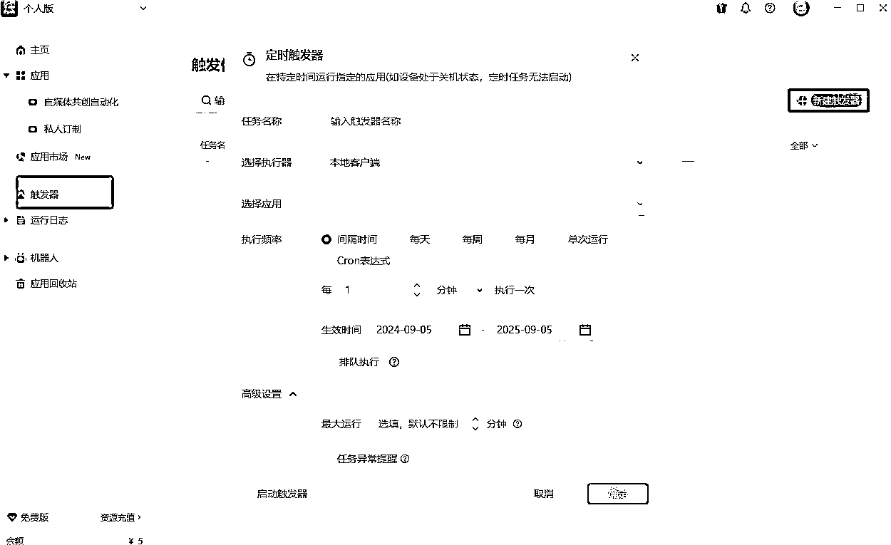
因为，目前我觉得，这些手动的选题，本身就不多，所以我是手动执行一次，就能生成很多文章了。 后期如果加了跟踪热点的文章功能，可以考虑使用定时器。
RPA本质上是模拟人工操作，我的脚本是在我的电脑上调试的，有可能你们的电脑会因为尺寸或者环境原因，导致不能使用，所以如果所有环节都配置了，还是跑不起来，可以试着自己调试调试，一般就是重新获取元素，就能解决了。我觉得RPA挺简单的，学一学，后续自己动手，会更方便的。实在不行，就到我的交流群，我看到了，会给大家解答。
不要无脑就开骂，说我骗人。本身就是无偿分享的，我花这么多时间骗你们点击，没啥意义。肯定是希望能帮助到大家的。
本文所有用到的软件工具，个人用户都是免费的。我编写的脚本，也是免费提供给大家的。
不过，如果有朋友们，觉得我辛苦整理不易，愿意给我点鼓励的话。那当然是极好的。
对于愿意付我辛苦费的朋友，我会专门拉个群，优先给你们解答软件使用问题哈
有的人就问了，是不是不付费就不解答了，不至于哈，我同样也会拉个交流群，大家有兴趣的话也可以找我加群，只要我有时间，看到大家有问题，都会解答的。
另外，最近新建了个付费社群，社群朋友可以进入我的coze团队，共享教程用到的所有工作流。且后续会陆续跟上教程视频，欢迎大家加入！
做个自我介绍，本人12年经验的大龄程序员。
我可以提供：RPA自动化脚本编写，网站软件开发，平面设计、手绘；
需求，合作，交朋友都可以找我。
生财不让留微信，有需要链接的，靠缘分 哈哈哈哈
愿大家的事业顺心顺利。无论前路有多少挑战，都能以坚定的信念和无畏的勇气披荆斩棘，开创出一片属于自己的辉煌天地，收获满满的成就与荣耀。